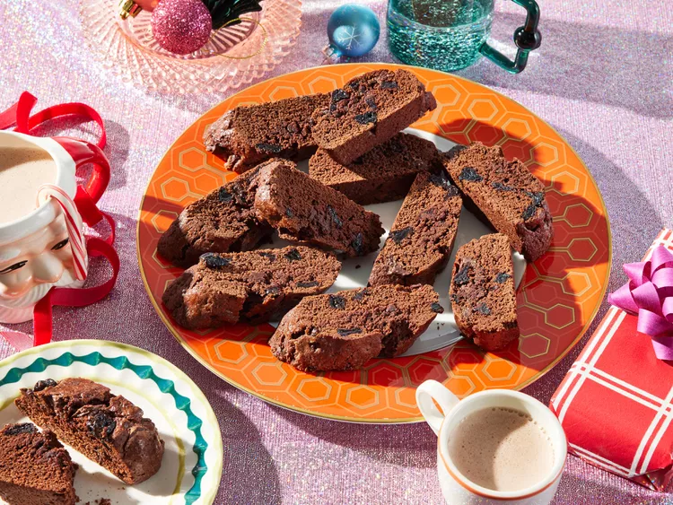

Biscotti

Description:
These Double Chocolate Biscotti are anything but ordinary! Inspired by the decadent Black Forest Cake, these twice-baked cookies are crisp and packed with rich chocolate chunks and bursts of sweet candied cherries. Perfect for the holidays, they pair wonderfully with hot cocoa, coffee, or a warm cocktail.
Ingredients:
Biscotti
- 1/2 cup granulated sugar
- 1/2 cup salted butter, softened (1 stick)
- 3 large eggs
- 1 teaspoon vanilla extract
- 1 3/4 cups all-purpose flour
- 1/2 cup unsweetened cocoa powder
- 2 teaspoons baking powder
- 1/2 cup dark chocolate chunks
- 1/2 cup candied cherries, halved
Egg Wash
- 1 egg, beaten
- 1 tablespoon water
Steps:
- Preheat the oven to 375 degrees F (190 degrees C). Line a high-rimmed baking sheet with parchment paper .
- Combine softened butter and sugar in a large bowl and beat with an electric hand mixer until creamy. Beat in eggs and vanilla extract until well combined.
- Add all-purpose flour, unsweetened cocoa, and baking powder; mix until combined. Stir in the chocolate chunks and candied cherries by hand (dough will be thick).
- Split dough in half and shape into rectangular logs, about 8x2x1 inch in size. Place on the prepared baking sheet.
- In a small bowl, whisk together egg and water and brush the tops of the logs with the egg wash.
- Bake in the preheated oven for 20 minutes.
- Remove from the oven and cool for 30 minutes.
- Slice logs into 1 inch slices diagonally with a serrated knife. Arrange slices on the baking sheet on their sides.
- Bake for 10 minutes at 375 degrees F (190 degrees C), turn, and bake for an additional 10 minutes.
- Cool completely and store biscotti in an airtight container.